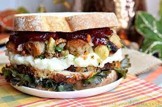

Leftover Sandwiches

Description
So you've got some leftovers in the fridge, but you don't want to just eat it, just like that. Maybe you've already had enough of that flavour, maybe you just want to increase the size of your portion.
Regardless of your reasoning, you may want to slap between two slices of bread... Right? It's not just me, I hope
Requirements:
- Leftovers. Almost anything may work, although results may vary based on the leftovers used... Let's face it, you're too sad to care what it is.
- Some bread. White bread, brown bread, doesn't matter. Bonus points for bread rolls, although plain old sliced bread works just fine
- Your condiments of choice (optional)
Instructions:
- Inspect your leftovers and make a decision: Hot or cold. This may be the biggest decision you need to make in this recipe, but it's hopefully an obvious one
- If you've decided to keep the leftovers cold, skip to step 4. Otherwise, heat up the leftovers. Make it just a bit too hot to eat, so that it can cool down on the bread
- Toast your bread. This is recommended for warm leftovers, as I'm sure you just can't be bothered when making cold leftover sandwiches
- Put the leftovers on the bread. Lay it as thick as you want to.
- (optional) add your condiments of choice. Pretend you're not just doing this out of pure lazyness
- "Enjoy" your creation.